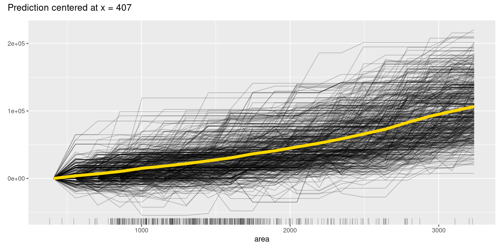
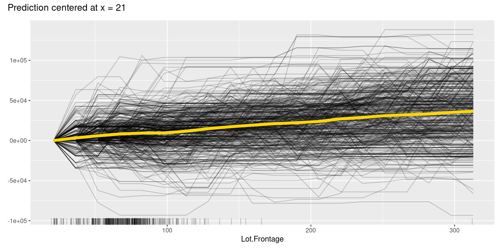
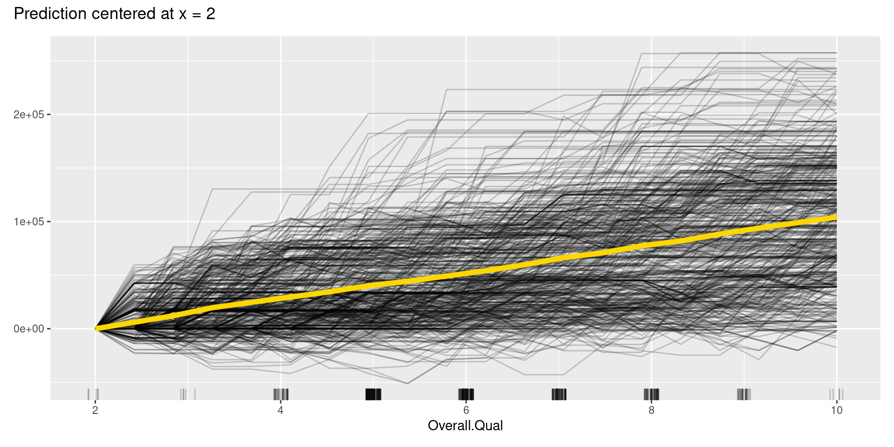
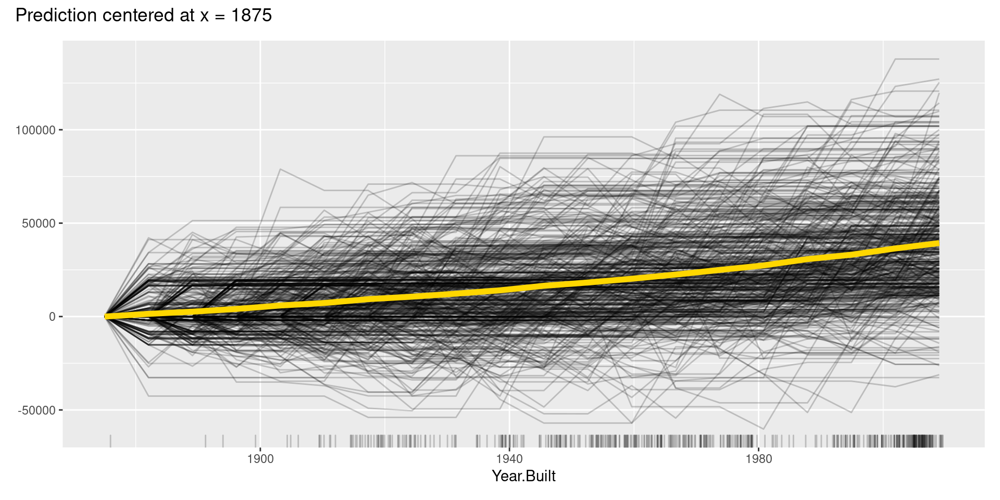
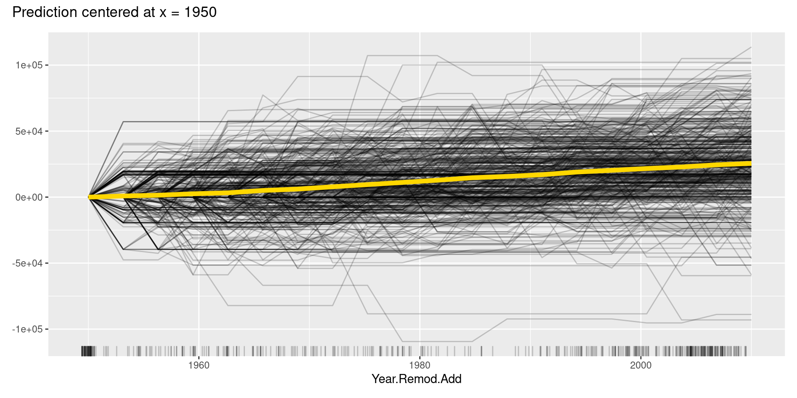
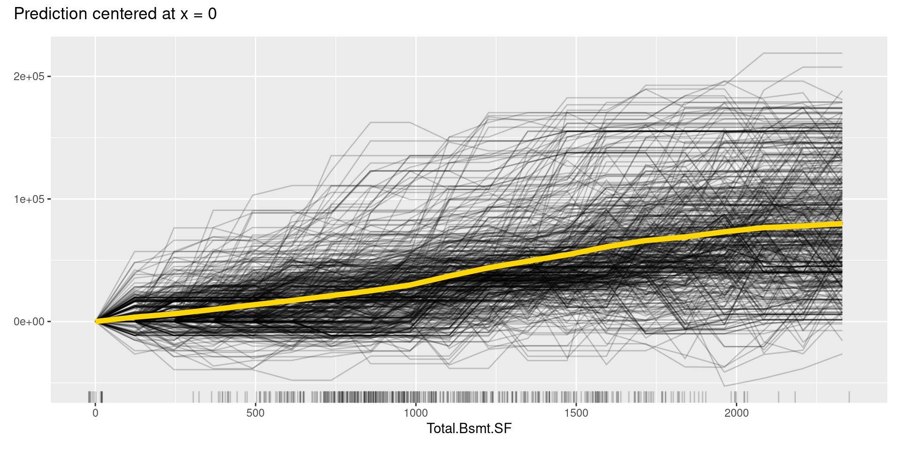
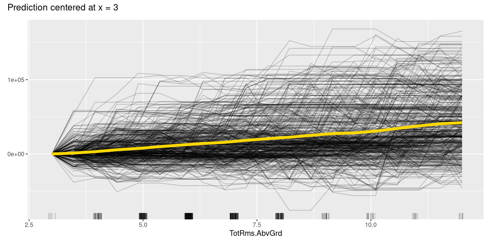
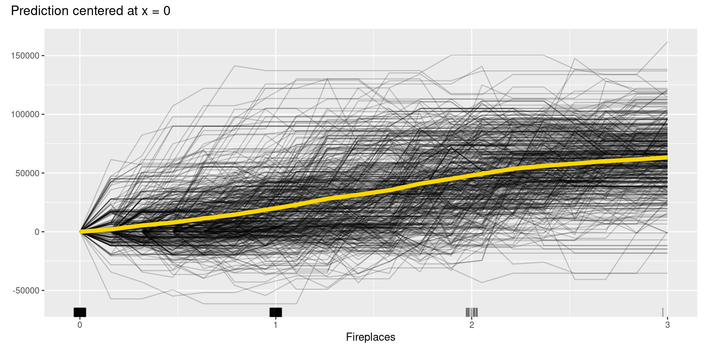

57 Introduction to XAI (Explainable AI) in R
Masataka Koga
library(openintro)
library(tidyverse)
library(rsample)
library(doParallel)
library(caret)
library(iml)
library(patchwork)57.1 Motivation
Unlike linear models and decision trees, machine learning models are often described as black-box models due to their complexity. It is difficult to describe the relationship between independent and dependent variables so that humans can intuitively understand. For this reason, machine learning models tend to be avoided in cases where the goal is to explain the mechanism of event occurrence, or where the causes of the model’s prediction must be explained to convince those who will be affected by the decision. In other words, machine learning is mainly used for tasks where prediction itself is important.
However, simple interpretable models have a limit to the events that can be described. So, to utilize machine learning models, investigations and researches on methods to explain the model structure in a format easy for humans to understand have progressed. In addition, The General Data Protection Regulation (GDPR) in the EU, the strictest privacy and security law in the world, puts a premium on transparent AI. Therefore, the interpretability of machine learning models is becoming crucial and required by society.
57.2 Introduction
Typical cases in which interpretability is more important can be divided into the four types below. In such cases, the usage of XAI (Explainable Artificial Intelligence), methods for explaining and interpreting black-box models, is a very promising option.
The conclusions need to be reasoned and convince those affected by the machine learning model’s decisions:
When the model makes conclusions or decisions that have significant financial, psychological, or physical impacts on people, such as loan approvals or diagnoses of diseases, or when the conclusion depends mainly on the model results, affected people are more likely to seek satisfactory explanations.The model may provide new knowledge to humans, such as scientific laws:
In building machine learning models, some projects have the higher possibility that the model will learn patterns that were not anticipated. In such a case, it becomes more critical to elucidate the mechanism of pattern generation to derive laws.There are risks that the model faces and the measures for the risk are required to manage:
There are some cases, such as projects for self-driving cars, where the risk of model predictions being wrong is significant and all possible events must be examined in advance. In such cases, it is necessary to comprehend what events are predictable and what events are difficult to predict in machine learning models.The potential bias of models has enormous impacts:
When using machine learning models to describe events that require ethical considerations, such as sexism, racism, etc., we must recognize the biases that the model may learn, correctly detect the learned biases, and take the necessary actions.
XAI (Explainable Artificial Intelligence), which is also called IML (Interpretable Machine Learning), as the term implies, refers to machine learning models in which the processes leading to predicted or estimated results can be explained or interpreted by humans, or to technologies and research fields related to these models. I will introduce the methods to explain black-box models as one of the technologies. As for R packages for XAI, iml and DALEX are well known and have methods as follows, respectively. I will focus on ones we can implement in R using the iml package.
| Policy | Method | iml | DALEX |
|---|---|---|---|
| Entire Model Interpretation | Residuals and Goodness of Fit | None | model_performance |
| Entire Model Interpretation | Permutation Feature Importance | FeatureImp | model_info |
| Entire Model Interpretation | Global Surrogate Model | TreeSurrogate | None |
| Features Interpretation | Partial Dependence Plot (PDP) for Categorical Feature | None | variable_effect |
| Features Interpretation | Partial Dependence Plot (PDP) for Numerical Feature | FeatureEffects | variable_effect |
| Features Interpretation | Individual Conditional Expectation (ICE) Plot | FeatureEffects | predict_parts |
| Features Interpretation | Accumulated Local Effects (ALE) Plot | FeatureEffects | variable_effect |
| Features Interpretation | Feature Interaction | Interaction | None |
| Local Interpretation | Local Interpretable Model-Agnostic Explanations (LIME) | LocalModel | None |
| Local Interpretation | Shapley Value | Shapley | None |
| Local Interpretation | breakDown | None | predict_parts |
57.3 Model Training
At first, I created the neural network model (NN model) as a black-box model. In the following code, I utilized the ames dataset in the openintro package, which we analyzed in PSet2, selected eight out of the numeric variables in the ames as independent variables, and sampled 20% of data as training data to introduce XAI simply. The rsample package enables us to split data by random sampling into train and test data easily. Also, I set the set.seed(0) for the reproducible analysis. The selected variables are as follows.
| Variables | Explanation |
|---|---|
| price | Sale price in USD |
| area | Above grade (ground) living area square feet |
| Lot.Frontage | Linear feet of street connected to property |
| Overall.Qual | Rates the overall material and finish of the house |
| Year.Built | Original construction date |
| Year.Remod.Add | Remodel date (same as construction date if no remodeling or additions) |
| Total.Bsmt.SF | Total square feet of basement area |
| TotRms.AbvGrd | Total rooms above grade (does not include bathrooms) |
| Fireplaces | Number of fireplaces |
set.seed(0)
ames_8 <- ames[c("price", "area", "Lot.Frontage",
"Overall.Qual", "Year.Built", "Year.Remod.Add",
"Total.Bsmt.SF", "TotRms.AbvGrd", "Fireplaces")] %>% na.omit
# split the ames data to train and test data by the rsample package
ames_split <- initial_split(ames_8, prop = 0.2)
ames_train <- training(ames_split)
ames_test <- testing(ames_split)Parameter tuning for NN models is often time-consuming due to the huge amount of calculations. In such cases, we can parallelize the computation to increase the computation speed by doParallel package. My PC has 8 cores. We can check the number of cores by launching a command prompt and typing “set NUMBER_OF_PROCESSORS.” In the R code below, by executing the R function called “detectCores(),” R automatically sets the number of cores for makePSOCKcluster() function according to our PC’s specifications.
For implementing NN model, we can use the caret package. The package allows efficient implementation of many different machine learning models in R without learning and management of various related packages. Basically, we need to know predict(), which calculates the prediction values using trained models, and train() functions in the caret. To train NN model by nnet package, set the argument of method as “nnet”.
We can normalize the data by specify “preProcess = c(”center“,”scale“),” find the best hyperparameter based on cross-validation by setting “trControl = trainControl(method =”cv“),” decide the range for cross-validation by “tuneGrid = expand.grid(size = sequence_1, decay = sequence_2)” with arbitrary desired sequences of sequence_1 and sequence_2. Also, we can decide only the number of parameter combinations to test by “tuneLength = n” with the desired number of n. In this case, the number of tested patterns is \(n^2\) because caret searches grid points for n points respectively in size and decay. Then, We can set “lineout = TRUE” to run the regression of NN model and set “trace = FALSE” to hide the results in each step. To save the time to tune the model, not specify too large tuneLength and tuneGrid patterns. Finally, I changed the metric from the default setting, “RMSE” (Root Mean Squared Error), to “MAE” (Mean Absolute Error) because MAE is more robust to outliers.
# parallelize the computation by the doParallel package
cl <- makePSOCKcluster(detectCores())
registerDoParallel(cl)
modelNnet <- caret::train(
price ~ .,
data = ames_train,
method = "nnet",
preProcess = c("center", "scale"),
metric = "MAE",
trControl = trainControl(method = "cv"),
tuneLength = 20,
linout = TRUE,
trace = FALSE
)
modelNnet$results %>% arrange(MAE) %>% round(5) %>% slice(1:20)## size decay RMSE Rsquared MAE RMSESD RsquaredSD MAESD
## 1 37 0.00015 35726.60 0.82030 25468.22 5471.058 0.05909 3680.527
## 2 27 0.00316 37465.14 0.80790 26166.02 10150.167 0.04451 5531.278
## 3 35 0.10000 36430.76 0.80661 26332.16 7035.994 0.07227 3998.467
## 4 33 0.10000 37664.35 0.79549 26342.81 9245.159 0.06696 4735.856
## 5 37 0.00681 38331.92 0.79081 26512.93 9500.188 0.07179 5819.955
## 6 37 0.03162 36909.45 0.79301 26549.28 8640.992 0.06349 4990.229
## 7 39 0.00032 37427.54 0.80997 26599.77 7912.271 0.04127 4359.057
## 8 37 0.04642 38513.41 0.78878 26610.00 8620.747 0.07060 4338.640
## 9 37 0.06813 37844.89 0.79944 26640.74 8528.319 0.04049 4379.730
## 10 39 0.00000 38725.90 0.79066 26788.45 8098.097 0.05364 3376.867
## 11 35 0.00464 39356.09 0.78475 26810.90 6316.756 0.04519 3659.406
## 12 39 0.04642 37050.99 0.81239 26846.04 7463.946 0.04654 4696.565
## 13 29 0.00068 39368.11 0.78116 26854.55 9906.432 0.06423 4506.193
## 14 39 0.00022 37567.39 0.79511 26905.47 10603.506 0.06394 5740.192
## 15 33 0.00215 37523.85 0.79714 26945.15 6616.930 0.08212 4546.715
## 16 39 0.00046 38245.61 0.79858 26988.93 8444.528 0.04124 4478.493
## 17 39 0.00068 38054.64 0.79257 27019.82 8938.735 0.04386 4265.150
## 18 31 0.00010 37041.91 0.80137 27094.78 6346.569 0.04844 4037.853
## 19 39 0.00015 38397.60 0.78882 27125.06 9873.664 0.06774 6165.891
## 20 39 0.01468 38973.02 0.78150 27158.82 6957.925 0.06207 5068.639
price_sd <- ames_train %>% summarise(sd(price)) %>% round(2)
price_sd %>% str_c("SD of Price in Train Data: ", .) %>% print## [1] "SD of Price in Train Data: 82290.72"
(summarise(modelNnet$results, min(MAE)) / price_sd) %>% round(2) %>%
str_c("MAE / Price_SD: ", .) %>% print## [1] "MAE / Price_SD: 0.31"I searched the best hyperparameters in 400 combinations, and it took over 5 minutes. The $results or $bestTune parameter in the fitted model object shows us the tuned hyperparameter. The carel seemed to work well because MAE for the best model is 0.3 times the standard deviation of price data though I selected only eight independent variables. Now, all the learning process for NN model has finished. In the following sections, I will explain the XAI methods in the iml package and implement them.
57.4 Entire Model Interpretation
XAI can be roughly divided into three types by its policy, Entire Model Interpretation, Features Interpretation, and Local Interpretation. At first, I will briefly explain two methods for entire model interpretation, Permutation Feature Importance and Global Surrogate Model, as intuitive means to comprehend the whole structure of learned black-box models, and its implementation using the iml package. If you need more detailed information, Interpretable Machine Learning (e-book) in the Reference section offers it about all methods in the iml package because the author of the e-book, Christoph Molnar, is one of the authors of iml.
57.4.1 Permutation Feature Importance
Permutation Feature Importance is a method devised by Breiman in 2001 to interpret random forests in order to ascertain the magnitude of importance of each independent variable. The technique has been improved, and a model-agnostic method was devised by Fisher et al. in 2018. In this method, the feature values of interest are randomly shuffled in the dataset, and the prediction error is calculated to see how much it worsens. In this method, if the model error is more significant, the importance of the independent variable is more important in the model.
To execute any XAI methods, including permutation feature importance, by iml package, we need to set a Predictor object, which basically requires a fitted model object and data to be used for analyzing the prediction model. Employing XAI methods to classification models, we need to specify the class and type for Predictor object. Apart from predictor, FeatureImp has three arguments, loss, compare, and n.reptitions, as follows.
- loss: loss function or character to indicate the name of a loss function like “mae,” which I chose for this argument because MAE was the criterion in training the NN model
- compare:“ratio” or “difference,” which adopt “error.permutation/error.orig” and “error.permutation - error.orig” to measure importance after permutation respectively
- n.repetitions: the number of feature shuffling. The higher repetition number leads to the more stable and accurate results
predictor <- Predictor$new(modelNnet, data = ames_train)
imp <- FeatureImp$new(predictor, loss = "mae", compare = "ratio")
plot(imp)
imp$results## feature importance.05 importance importance.95 permutation.error
## 1 Overall.Qual 1.332271 1.375708 1.445636 34619.43
## 2 Total.Bsmt.SF 1.281268 1.342420 1.381296 33781.74
## 3 area 1.181727 1.221719 1.238896 30744.32
## 4 Year.Built 1.129118 1.143510 1.150887 28776.22
## 5 Fireplaces 1.094286 1.138405 1.177194 28647.73
## 6 Year.Remod.Add 1.100516 1.107295 1.150158 27864.87
## 7 TotRms.AbvGrd 1.073049 1.092501 1.121043 27492.59
## 8 Lot.Frontage 1.001445 1.022589 1.033454 25733.27In the graph above, the line shows the range from 5% to 95 % quantile of importance values from the repetitions, and the point is the estimated importance of the variable, median importance. The result means that Total.Bsmt.SF has the most significant effect and Lot.Frontage has the least effect on the price in our trained model.
The advantages of this method are that it gives highly condensed information about the behavior of the model, it is comparable between problems with different units of features by choosing the ratio of errors instead of the difference of errors, the calculation automatically takes into account all interactions with other features, and it does not require re-training of the model, so the results can be obtained fast. The disadvantages are that it is not clear whether training or test data should be selected to measure the feature importance, the calculation requires access to the true results, the results may change significantly after many calculations due to the randomness in the estimated results, and the results may be distorted if there is the correlation between features.
57.4.2 Global Surrogate Model
An approximate model created for a trained machine learning model using training data without bias is called a Global Surrogate Model. To adopt simple and interpretable models such as linear models and decision trees as surrogate models makes it possible to interpret black-box models. There is also a way to create surrogate models as compact models that reduce the feature numbers in machine learning models. On the other hand, approximate models created by only parts of training data or by focusing on some data are called Local surrogate models, which will be introduced later in the section of Local Interpretable Model-Agnostic Explanations (LIME).
The iml package provides only TreeSurrogate method for global surrogate models of decision trees. Apart from predictor, TreeSurrogate has only the two arguments below.
- maxdepth: the number of the maximum tree depth. Default is 2. The deeper trees can grasp fitted models more accurately but have less explainability
- tree.args: arguments for conditional inference trees in party::ctree(), but you do not have to specify any ctree arguments because they are optional and not required
tree <- TreeSurrogate$new(predictor, maxdepth = 4)
plot(tree)## [1] "MAE of NN model: 26435"
(abs(predict(modelNnet, ames_test) - predict(tree, ames_test)))[,1] %>%
mean %>% round %>% str_c("MAE of GS model: ", .) %>% print## [1] "MAE of GS model: 25005"In the graph above, we can confirm that Overall.Qual is the root node, second nodes are both area, the distributions of values predicted by the learned model (target model for tree surrogate model) in each leaf node are not fat-tailed, the distribution has distinctive mean values in each leaf node. In other words, the graph allows us to interpret the structure of the trained black-box model while the tree model approximates adequately. On the other hand, the MAE of the tree global surrogate model is not so minor compared to the NN model. Therefore, the results do not mean that the interpretable tree model has the same level of prediction accuracy for actual values as the NN. We should not forget that target values of the tree model are not actual values but values predicted by the fitted NN model.
The advantages of global surrogate models are that in addition to any interpretable model, black-box models can also be adopted as surrogate models, and that this method is intuitive and easy to explain to those other than data scientists. Some of the disadvantages are that surrogate models do not predict actual results, so we need to be careful of our conclusions, that there is no clear threshold to determine whether the approximation is sufficient, and that if we approximate too much, we end up with just new black-box models.
57.5 Features Interpretation
In this section, I will introduce five methods for feature interpretation, Partial Dependence Plot (PDP), Individual Conditional Expectation (ICE) Plot, Centered ICE (c-ICE) Plot, Accumulated Local Effects (ALE) Plot, and Feature Interaction, to grasp the characteristics of features in learned black-box models, and the usage methods of iml. Some other feature interaction methods, such as d-ICE plot and m-plot, are less valuable than those above and not implemented in the iml package. So, I will not explain here, and please refer to the e-book of Interpretable Machine Learning if interested.
57.5.1 PDP, ICE Plot, and c-ICE Plot
J. H. Friedman proposed Partial Dependence Plot (PDP) in 2001, which calculates the marginal effect of independent variables of interest on dependent variables in trained models; in other words, PDP draws how much predicted values changes in response to the value shift of the variable. Goldstein et al. introduced the Individual Conditional Expectation (ICE) plot in 2015. It is a plot that depicts how the fitted model predictions change when the variable values other than the variable of interest are fixed at the value of one sample, and only the variable of interest is changed. The average of ICE for all samples is the value of PDP. By depicting the ICE, we can see the effect of the interaction between variables on predictions, which the PDP obscure.
To draw them by using iml, we can utilize FeatureEffects() method and its arguments other than a predictor.
- features: names of the features for which to compute PDP and ICE plot
- method: “pdp+ice” for PDP and ICE plot within the same plot
- center.at: not use for PDP and ICE plot
- grid.size: size of the grid for evaluating the predictions
- feature: feature name or index for which to compute PDP and ICE plot. not set when using features instead
pdp <- FeatureEffects$new(predictor,
features = predictor$model$coefnames[1:4],
method = "pdp+ice")
plot(pdp)
pdp <- FeatureEffects$new(predictor,
features = predictor$model$coefnames[5:8],
method = "pdp+ice")
plot(pdp)In the figure above, PDPs are depicted in yellow curves, ICE plots in black curves, and distributions of each variable in short lines on the x-axis. From PDP, we can say that all variables may have positive correlations with the price. On the other hand, Lot.Frontage and Total.Bsmt.SF seem to have nonlinear relationships. Also, ICE roughly shows that the relationship between independent variables and price is not consistent in each sample but heterogeneous due to interactions between independent variables.
However, like these graphs, ICE plots are sometimes too complicated to see the curves differ between each sample because they start at different predictions. To solve this problem, we can use centered ICE (c-ICE) plot, which is a graph with centered ICE curves at one point in each variable (often selected as the lower end of each feature) and shows only the difference in the prediction from the point.
The center.at argument in FeatureEffects() function gives the easy way to make c-ICE graphs by assigning numeric value at which the plot should be centered.
min_val <- predictor$model$trainingData[,predictor$model$coefnames] %>%
summarize_each(min) %>% as.numeric
for(i in 1:length(min_val)){
pdp <- FeatureEffects$new(predictor,
feature = predictor$model$coefnames[i],
method = "pdp+ice",
center.at = min_val[i])$plot()
plot(pdp)
}
Although, in this case, we cannot find apparent patterns of changes in the c-ICE plots, c-ICE plots often make it easier to compare the curves of individual samples. We can comprehend the types of shifts in some cases, such as when some samples go up and then go down but others’ changes are opposite.
57.5.2 Accumulated Local Effects (ALE) Plot
D. W. Apley presented Accumulated Local Effects (ALE) Plot in 2016. While ALE Plot calculates the average effect of independent variables on the predictions of constructed machine learning models like PDP, ALE plots are a faster and unbiased alternative to it. Unlike PDP, ALE plot can take into account interactions of variables even when they are correlated, and its theory makes the average of the output values aligned to zero.
In the same way as PDP, we can quickly implement ALE by the FeatureEffects() method with the argument of ‘method = “ale”.’
ale <- FeatureEffects$new(predictor,
features = predictor$model$coefnames[1:4],
method = "ale")
plot(ale)
ale <- FeatureEffects$new(predictor,
features = predictor$model$coefnames[5:8],
method = "ale")
plot(ale)The above ALE plot tells a lot of distinctive nonlinear relationships of variables to price, which PDP could not represent. Therefore, we should depict ALE plot as well as other feature interpretation methods. On the other hand, we cannot interpret the effect across intervals if variables are strongly correlated. Also, ALE plots sometimes have many small ups and downs, are not accompanied by ICE curves, unlike PDPs, which can reveal heterogeneity in the feature effect, and are less intuitive compared to PDP because of much more intricate implementation.
57.5.3 Feature Interaction
Feature Interaction is a method to express the strength of the interaction between two features, and the iml package adopts Friedman’s H-statistic to measure it. Friedman’s H-statistic is a statistic devised by Friedman et al. in 2008. It takes on values between 0 (when there is no interaction between two variables) and 1 (when all influence on predicted values is derived via interaction only).
As written below, we can simply compute and plot them by Interaction() function in iml package with the arguments already introduced above.
interact <- Interaction$new(predictor)
plot(interact)The above table shows that area, Fireplaces, and Overall.Qual have relatively stronger interaction with other variables, while the interaction effects for Year.Built and Lot.Frontage are smaller. Indeed, we can regard the cause of difference between PDP and ALE plot for area and Overall.Qual as these high levels of interactions. Though, in the plots for Fireplaces, we cannot see a similar difference, we can guess that interactions may offset each other in ALE plots. Likewise, the graphs for Year.Built and Lot.Frontage have similar appearances compared with others, and it makes sense since their H-statistic values are less than others.
57.6 Local Interpretation
Finally, I will explain Shapley Value and Local Interpretable Model-Agnostic Explanations (LIME) as methods for Local Interpretation. They can explain individual predictions of black-box machine learning models. Like the previous sections, the e-book of Interpretable Machine Learning mentions some techniques I omitted here since the iml package does not have ways to implement them.
57.6.1 Shapley Value
The Shapley value is a method convinced based on the idea of fairly evaluating the contribution of independent variables to predictions by applying the Shapley value proposed by Shapley in 1953 in cooperative game theory. Intuitively, the method calculating the contribution is as follows: for a single model prediction, when any independent variable is changed from zero into the actual value of the sample in random order, one variable at a time, the prediction change due to the addition of variable of interest is calculated for all change patterns and averaged. The iml package adopts the Monte Carlo sampling approximation introduced by Strumbelj et al. in 2014.
Shapley() method in iml estimates Shapley value by using the following arguments. The patchwork package below is designed to make graph composition simple and powerful, and enables us to draw a set of graphs by “+”.
- x.interest: data.frame of a single row with the variable to be explained
- sample.size: number of Monte Carlo samples for estimating the Shapley value
shapley_f <- function(x.interest){
shapley <- Shapley$new(predictor,
x.interest = x.interest)
plot(shapley) +
theme(axis.text = element_text(size = 10))
}
# draw a set of graphs by the patchwork package
shapley_f(x.interest = ames_train[1,]) + shapley_f(x.interest = ames_train[2,]) +
shapley_f(x.interest = ames_train[3,]) + shapley_f(x.interest = ames_train[4,])
shapley_f(x.interest = ames_train[5,]) + shapley_f(x.interest = ames_train[6,]) +
shapley_f(x.interest = ames_train[7,]) + shapley_f(x.interest = ames_train[8,])For each sample for which we calculated Shapley values, the graph clearly shows, in comparison with the average of the predicted values, which variables take what values, what contribution they make to the predicted values, and how much more (less) prominent the resulting values are. Unlike local models such as LIME, which will be explained in the next section, the Shapley value can be compared to subsets of data or even single data, in addition to being the only explanatory method based on a solid rational theory.
On the other hand, it requires a lot of computation time, and for almost all real-world problems, it can only provide approximate solutions. In some cases, such as when it is necessary to explain an event that contains few features, or when there is a correlation between features, the Shapley value may be inappropriate. It is a developing technology, and corrections are being considered in response to pointed-out problems. Other than that, the Shapley value returns a simple value per feature, but there is no prediction model like LIME. Therefore, it is not possible to predict effects caused by input changes, such as the prediction of effect, “If my income increases by x dollar, my credit score will increase by y points.”
57.6.2 Local Interpretable Model-Agnostic Explanations (LIME)
LIME is a specific implementation of the local surrogate model proposed by Ribeiro et al. in 2016 to explain each prediction. As the name suggests, it locally approximates the learned model with an interpretable model and uses the approximated model to explain individual predictions. The idea is very intuitive: LIME examines how predictions change when variation is added to the input data of the fitted model. It creates a new dataset with the variation, predicts with it, and then trains interpretable models, such as Lasso and decision tree, based on the new dataset with the predicted values. However, you should be aware that the trained model is not a globally good approximation but locally approximates the black-box model predictions.
For LIME, the iml package has LocalModel() method with the new arguments below. It fits locally weighted linear regression models (logistic regression models for classification) as interpretable models to explain single model predictions.
- dist.fun: distance function name for computing proximities (weights in the linear model). Defaults to “gower.” Other distance functions in stats::dist can be used
- kernel.width: width of the kernel for the proximity computation. Only used if dist.fun is not “gower”
- k: number of independent variables
lime_f <- function(x.interest){
lime <- LocalModel$new(predictor,
x.interest = x.interest,
k = ncol(ames_train) - 1)
plot(lime)
}
# draw a set of graphs by the patchwork package
lime_f(x.interest = ames_train[1,]) + lime_f(x.interest = ames_train[2,]) +
lime_f(x.interest = ames_train[3,]) + lime_f(x.interest = ames_train[4,])
lime_f(x.interest = ames_train[5,]) + lime_f(x.interest = ames_train[6,]) +
lime_f(x.interest = ames_train[7,]) + lime_f(x.interest = ames_train[8,])Looking at the above figure, unlike the Shapley value, there are not distinctive differences in the estimated results for each sample, and LIME does not seem to be working well in this case. In fact, since in the LIME for tabular data, giving the correct definition of the neighborhood is a significant unsolved problem and LIME has not a few other challenges, these results are reasonable. Other issues such as the sampling technique and the fatal instability of the explanation make LIME not so much reliable method far more than Shapley value. Many problems need to be solved before LIME can be used safely.
On the other hand, LIME is a promising method because it has a number of unique advantages: it can replace the original machine learning model, but still utilize the same local interpretable model for the explanation; it is easy to adopt Lasso or short decision trees for simple, human-understandable explanations with noticeable findings; and it is one of the few methods effective for all tabular, textual, and image data.
57.7 Conclusion
I briefly explained all XAI methods in the iml package, which is the crucial ways to meet the social need for interpreting machine learning models, and how to implement them in R. While this topic is vital in the current data science projects, it is tough to follow all of them because many XAI methods are now being devised and revised. If you want to see other techniques or more detailed information, Interpretable Machine Learning, authored by Christoph Molnar, is one of the best resources. It is also quite beneficial to learn not covered methods or find the best combination with less cost of the XAI methods to some models because some ways are easy to implement for some models, such as tree models, but not for others.
57.8 Refenence
- Reference manual for iml package, Christoph Molnar and Patrick Schratz: https://cran.r-project.org/web/packages/iml/iml.pdf
- Reference manual for DALEX package, Przemyslaw Biecek et al.: https://cran.r-project.org/web/packages/DALEX/DALEX.pdf
- Reference manual for rsample package, Julia Silge et al.: https://cran.r-project.org/web/packages/rsample/rsample.pdf
- Reference manual for doParallel package, Michelle Wallig et al.: https://cran.r-project.org/web/packages/doParallel/doParallel.pdf
- Reference manual for caret package, Max Kuhn et al.: https://cran.r-project.org/web/packages/caret/caret.pdf
- Reference manual for patchwork package, Thomas Lin Pedersen: https://cran.r-project.org/web/packages/patchwork/patchwork.pdf
- Interpretable Machine Learning, Christoph Molnar: https://christophm.github.io/interpretable-ml-book
- How to use in R model-agnostic data explanation with DALEX & iml (Japanese), Satoshi Kato: https://www.slideshare.net/kato_kohaku/how-to-use-in-r-modelagnostic-data-explanation-with-dalex-iml
- Permutation feature importance: Breiman, Leo.“Random Forests.” Machine Learning 45 (1). Springer: 5-32 (2001)
- Model-agnostic permutation feature importance: Fisher, Aaron, Cynthia Rudin, and Francesca Dominici. “All Models are Wrong, but Many are Useful: Learning a Variable’s Importance by Studying an Entire Class of Prediction Models Simultaneously.” http://arxiv.org/abs/1801.01489 (2018).
- PDP: Friedman, Jerome H. “Greedy function approximation: A gradient boosting machine.” Annals of statistics (2001): 1189-1232.
- ICE plot: Goldstein, Alex, et al. “Peeking inside the black box: Visualizing statistical learning with plots of individual conditional expectation.” Journal of Computational and Graphical Statistics 24.1 (2015): 44-65.
- ALE plot: Apley, Daniel W. “Visualizing the effects of predictor variables in black box supervised learning models.” https://arxiv.org/abs/1612.08468v1 (2016).
- Feature Interaction (Friedman’s H-statistic): Friedman, Jerome H, and Bogdan E Popescu. “Predictive learning via rule ensembles.” The Annals of Applied Statistics. JSTOR, 916–54. (2008).
- Original Shapley value in cooperative game theory: Shapley, Lloyd S. “A value for n-person games.” Contributions to the Theory of Games 2.28 (1953): 307-317.
- Shapley value by Monte Carlo sampling approximation: Štrumbelj, Erik, and Igor Kononenko. “Explaining prediction models and individual predictions with feature contributions.” Knowledge and information systems 41.3 (2014): 647-665.
- LIME: Ribeiro, Marco Tulio, Sameer Singh, and Carlos Guestrin. “Why should I trust you?: Explaining the predictions of any classifier.” Proceedings of the 22nd ACM SIGKDD international conference on knowledge discovery and data mining. ACM (2016).